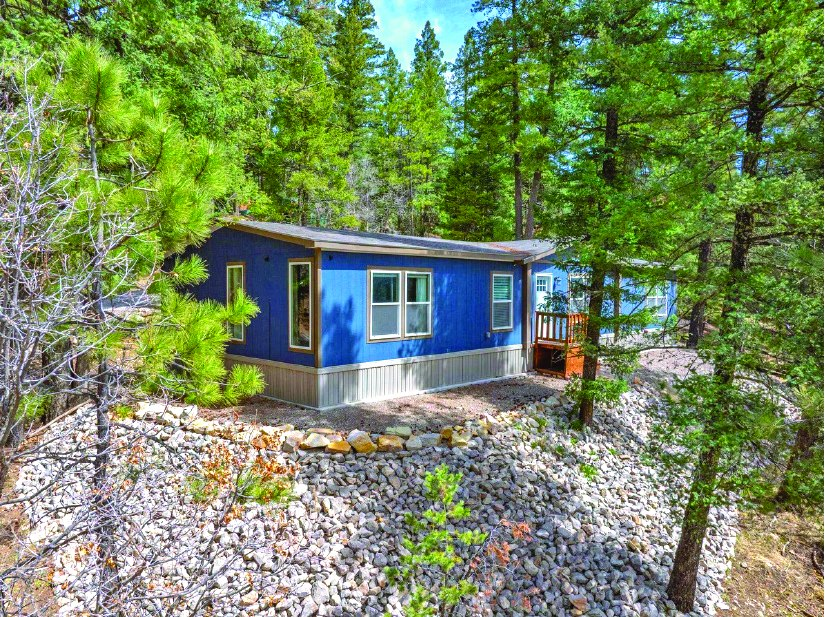
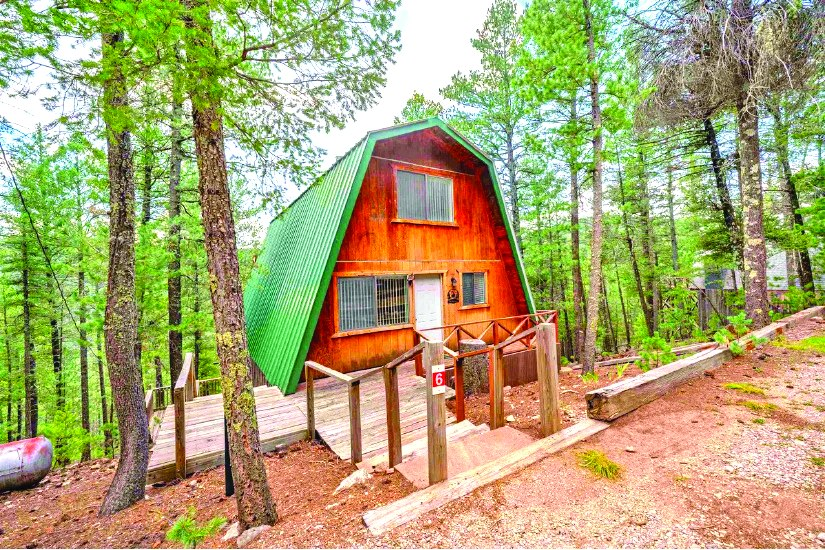
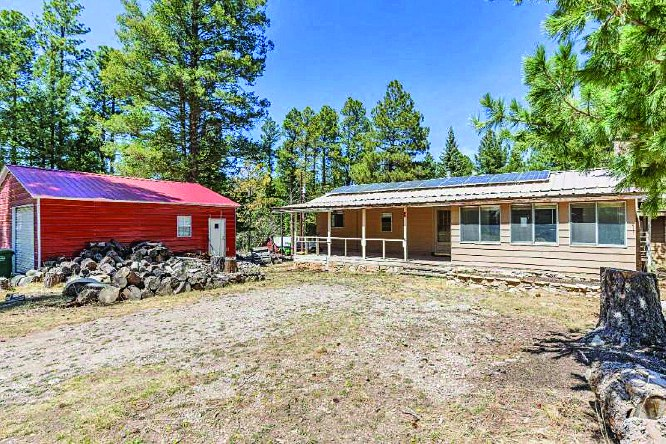
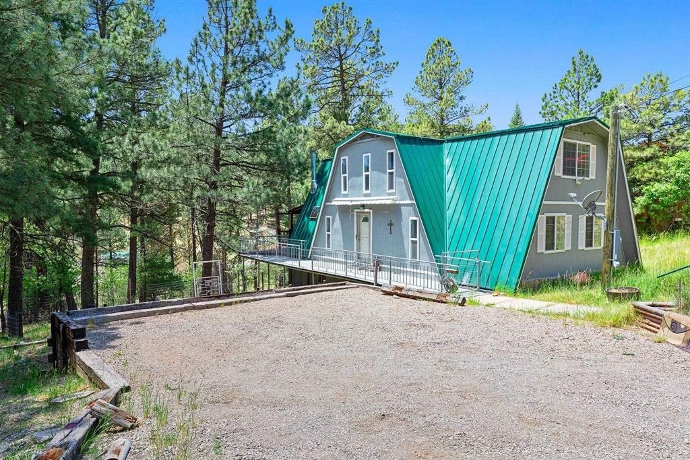
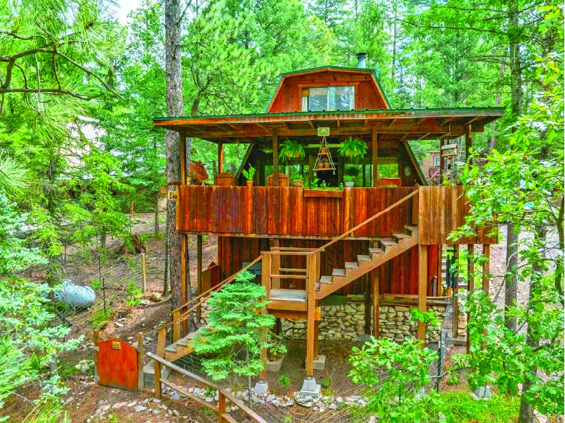
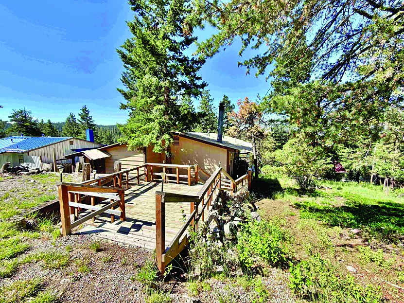

$285,000 3 Bedroom Property 3 bd MLS #172311
2 Bedroom Property
$283,500
| Price | $283,500 |
|---|---|
| Bedrooms | 2 |
| Bathrooms | 2 |
| MLS # | 173210 |
| Listed by | Aspen Trails Realty |
| Print edition | October 2026 Otero County Edition, page 2 |
About this property
Tucked Among the Trees - Furnished arch‑style 2 bdRM, 2 bath w/striking views & easy turn‑key living. Open kitchen w/center island, updated cooktop & new refrigerator, flowing into bright living area warmed by wood‑burning stove. Step onto the main deck to enjoy cool mountain air, or out from the bdrm to a private upper deck w/sweeping views. Full workshop beneath home, w/all contents included. Recent upgrades: new PEX plumbing, new propane line & inspected septic system w/new risers adds peace of mind. Additional 0.253‑acre lot across the road provides extra privacy, parking, or room to expand. # 173210. $283,500 .
Interested in this property?
Office phone: 575-682-7778
Aspen Trails Realty
Please contact the listing agent or company directly. The Real Estate Roundup is a publisher and does not show or sell properties.
Listing details and photo reproduced from the October 2026 print edition of The Real Estate Roundup (page 2), as printed. Prices and availability can change after publication — confirm with the listing agent.
More Homes

$285,000 12 Little John 1 ba · 1,400 sq ft · 0.25 acres Cloudcroft, New Mexico MLS #172604
$280,000 2 S Groesbeek Rd Cloudcroft NM 3 bd Cloudcroft, New Mexico MLS #172697
$289,000 Property in Cloudcroft Cloudcroft, New Mexico MLS #173128 $289,500
2 Bedroom Property
2 bd
MLS #172389
$289,500
2 Bedroom Property
2 bd
MLS #172389

$276,000 1001 Paqua Ave 2 ba Cloudcroft, New Mexico MLS #172811